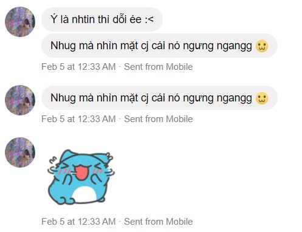
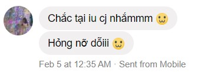

...
Từ bữa giờ nhờ có cậu mà mình vui hơn hẳn. Cũng không biết tại sao nhưng mà vui lắm ạ :3
Có nhiều cái mình ngại nói lắm ạ. Thậm chí là qua tin nhắn luôn á mà nhiều khi mình cũng không nói được. Nên mình sẽ tổng hợp ở đây nhen :3
Từ bữa giờ nhờ có cậu mà mình vui hơn hẳn. Cũng không biết tại sao nhưng mà vui lắm ạ :3

Có bạn đi Đà Lạt cái mua cho mình quá trời quà luôn :>
Thật ra thì đó giờ gia đình mình có thói quen là đi du lịch không mua quà,
với lại người xung quanh thì cũng không hay tặng nhau nên lúc đầu mình ngại nhận lắm luôn á
Lúc đeo cho tui gì mà run dữ dị pà :)))
Mấy nay mình gục hoài để cậu đợi mình cũng thấy có lỗi lắm ạ (｡T ω T｡)

Mình nói chơi chơi mà mấy nay thiếu đường mà mua cho mình hẳn 2 cái cheesecake với 1 ly đá xay luôn :>
Mà mình đâu ăn được cheesecake đâu nên cho mấy đứa ở nhà ăn luôn.
Tụi nó nói đừng có nói với cậu mình không biết ăn, cứ để mốt cậu mua tiếp cho tụi nó hưởng ké :))
Mà pà mua ly bự qué tui uống không nổi pà ưi ;---;

Tự nhiên mới ngủ dậy mà có bạn gửi hoa cho mình hết hồn luôn á :))
Tại mình ngủ quên mà cậu bị chú grab lúc đầu chửi ಥ‿ಥ
Mà chữ anh cũng hông có đẹp nhe :> chữ cậu đẹp hơn

Huhu củm ơn nhiều lém luôn
Mà mua gì nhiều quá pà :>> còn tự làm bánh nữa.
Hôm đó mình nhìn có vẻ hông quan tâm tới mấy món quà lém là tại muốn pà hơn :>
Pà dìa ròi mới lấy quà ra coi é :>
Chị thấy có lỗi với em quá. Chị ko quen thể hiện tình cảm của mình, nhất là với những người chị yêu thương nhất.
Chị cảm thấy nó bị khó á. Cũng không biết nói sao nữa...
Chị cũng biết sau hôm đó thì có thể là tụi mình không còn gặp nhau được nữa rồi mà chị cứ bị sao á. Chị xin lỗi em
Chị xin lũi píe 😭 Nay tụi nó qua đột ngột làm chị hem có biết seo hết. Chị sẽ nói lại dới tụi nó 🥺
Nay chị lỡ hẹn dới píe. Píe xếp lịch hết rồi mà chị làm lỡ hết trơn. Ý là chị thấy có lỗi lắm luôn á. Chị xin lỗi ạaa
Dới lại lúc píe nói chán é chị tự nhiên bị sợ tới nỗi khóc lun é. Kiểu cũng biết là píe giỡn hoi mà cũng sợ là thiệt é. Hem biết seo nữa (T▽T)
Là lúc píe hỏi khóc hẻ là có khóc thiệt é mà tại píe nói khóc là hem có hình nên chị chối ạ. Xin lũi vì nói dối píe ạ ( ；∀；)
Nhưng mà tại píe nhắn dị nè nên người ta dui lém lun é. Chị cảm ơn píe nhaaa :3


Có nhiều lúc tụi mình cũng chưa hiểu nhau lắm do mỗi người khi nhìn vào một vấn đề nào đó sẽ có cảm nhận khác nhau
Mấy lần đầu mà píe giận hay bùn mà ko nói chị nghe chị cũng hơi bùn é với có khi chị mệt é thì cũng thấy hơi khó chịu
Nhưng mà hôm tối 30 sáng mùng 1 (2023), cũng là tròn kỷ niệm 3 tháng tụi mình bên nhau thì chị cũng nói hết cho píe nghe.
Chị muốn tụi mình hiểu nhau hơn. Píe cũng ko quen nói ra nhưng píe cũng hứa sẽ tập từ từ nên chị vui lắm é :3
Vui vì cả 2 đứa đều muốn hết mình để hiểu nhau hơn, để những ngày tháng sau này vẫn sẽ có nhau.
Chị thật sự xin lỗi píe ạ (╥ω╥)
Lúc chị nói chị ko nghĩ gì nhiều tại chị cũng bị quen dùng từ "nó" á.
Nhưng mà píe biết seo hem :3 Mỗi người tụi mình đều có những cái từ hay những việc mà đối với người khác thì nó rất bình thường
nhưng với bản thân mình thì việc đó rất là khó chịu hay thậm chí là làm mình tổn thương
Chị cảm ơn píe Hân đã nói cho chị nghe píe cảm thấy như nào cũng như tha cho chị :3
Đi học hay đi làm lúc nào cũng tốn của chị qué trùi năng lượng lun é T.T
Kiểu 1 phần là đi mợt còn 1 phần là mợt về tinh thần é :((
Kiểu chị cũng ko giỏi gì mấy, nhìn đâu ai cũng hơn mình rồi có lúc làm hem ra é chị cũng nản, cũng bùn
Mà ko biết sao như tối hôm qua (hôm đầu tiên píe viết web cho chị é) là chị cũng sắp xỉu tới nơi òi. Kiểu bị nản á :((
Tại bài trên trường cũng chưa xong mà việc trong công ty cũng làm hoài ko ra.
Mà tự nhiên píe nói mún viết web nên chị cũng có sức lại xí xi :3
Xong lúc lên meet thấy píe á :3 Tự nhiên thấy tỉnh lại liền luôn
Ý là ko có nịnh hay gì luôn á mà chị thấy như vậy thiệt :3
Chị củm ơn píe lúc nào cũng ở bên cổ vũ chị nha :3 Người ta sẽ cố gắng để được ở bên píe trong thời gian sớm nhất :3
Lần đầu tiên tụi mình kêu nhau bằng vợ nà ( ,, • ω • ,,) ♡
Mong là sau này sẽ chính thức được như dị hen :3
Hehe :3
Vợ ơi vợ ơi :3
Củm ơn vợ :3
Tự nhiên chị thấy bị ngộp é :(
Kiểu hem phải là về chuyện của tụi mình mà là tự nhiên thấy có nhiều cái mình cần làm quá
mà không cái nào ra cái nào hết. Tự nhiên thấy muốn được "nghỉ" é.
Kiểu việc học rồi việc làm nữa. Việc học thì tự bản thân chị hem hài lòng với mình
còn việc làm thì chị cảm thấy chị bị ngộp é :(
Cảm giác như mình làm cái chú mời mình vô với ba thất vọng vậy. Tại task đầu này của chị là viết
một cái web như là shopee é. Mà chị chưa bao giờ lập trình bằng ngôn ngữ đó bao giờ :(
Nhận task cũng được 1 tháng rồi mà chưa xong nữa :(
Bữa cũng ok rồi mà chú kêu thêm mấy cái chức năng vô cái giờ nó tùm lum luôn :(
Làm hem ra :(
Chị cũng hem biết giờ nên làm sao nữa. Tại sợ làm hoài mà không ra :( chị hem có đủ
thời gian với sự đam mê để học thêm về cái đó nữa :(
1 tuần vừa qua chị cứ bị trì trệ sao é :( Với ngủ hoài nữa :(
Nói là tiêu cực thì cũng hem phải tiêu cực mà kiểu chỉ muốn nằm im 1 chỗ thoi é.
Không coi đt không đọc truyện không làm gì hết
Chị xin lỗi píe. 1 tuần vừa qua tụi mình nói chuyện với nhau ko được bao nhiêu hớt là đều tại chị :(
Chị biết là píe cảm thấy tủi thân, cảm thấy bị bỏ rơi lém :(
Chị cũng tự dằn vặt lém mà chị không biết sao chị không kiềm lại được cái cảm giác đó
Với lại lúc píe nói là hông dám dỗi chị tại biết là chị mệt é. Chị cảm thấy mình được trân trọng lắm luôn.
Kiểu đúng là khi yêu thì ai mà không muốn ngiu mình dành nhiều thời gian cho mình. Nhất là tụi mình mới có 19, 20 thôi.
Độ tuổi mà khi yêu thì chỉ muốn đối phương chỉ có mình mình thôi. Chị hiểu mà. Vậy mà píe bỏ qua hết tại píe lo cho chị.
Trong lúc đó chị cảm giác rõ được là píe cũng thương chị lắm luôn. Nhưng mà cũng cảm thấy tội píe á kiểu bị tội é :(
Ngiu mình mà mình dỗi cũng phải suy nghĩ rồi không được dỗi nữa é.
Chị cảm ơn píe vì luôn thông cảm cho chị như vậy và cũng xin lỗi píe vì để píe phải chịu thiệt thòi rồi
Cũng trong cái tuần mà ở trên đây nè :(
Chị thấy píe nhìn mợt mủi lém lun é :( Tại tuần này chị hem có dành thời gian nhiều cho pise đúng hem :(
Chị xin lỗi nha. Chị biết đây là khoảng thời gian đầu mà tụi mình chính thức xa nhau đến vậy.
Thật sự không tránh khỏi những lúc cảm thấy bất lực, buồn hay có lẽ là chán nản.
Chị biết mà, chị sợ lắm. Sợ tụi mình không vượt qua được những giai đoạn như này. Sợ píe hối hận khi quen chị.
Sợ tụi mình dần nhạt đi. Nhưng mà píe biết seo hem :3
Hồi lúc píe gần đi é, píe nói là qua tin nhắn hay call thì khó mà tránh khỏi chán nản hay là bùn nhưng mà khi
gặp chị trực tiếp rồi thì píe thấy được chị thương píe như nào á. Lúc đó chị vui lắm luôn :3
Nên là píe ơi, chị biết là quen chị sẽ có những cái lo âu không đáng có nhưng mà chị hứa chị sẽ bù đắp lại cho píe hết.
Píe chờ chị nha :3 Chị có những lúc chán nản với cuộc sống của riêng chị thiệt (học, làm) nhưng mà mối lần call dới píe é.
Tự nhiên chị lại có thêm động lực để tiếp tục :3
Chị cảm ơn píe :3